Test tab — try an app's actions, with permissions applied.
The Test tab on the app detail page lets a board user invoke any of an app's actions exactly as a chosen agent would — Allowed runs immediately, Ask first lands in Review for approval, Off blocks the call and points back to Permissions. This wire set covers the empty state, the default catalog, the Test-as picker, expanded form (with More options), and all four result states (Allowed / Error / Ask first / Off) plus mobile.
User journey
Three branches diverge at the access badge. Solid arrows are the happy path; dashed boxes are sibling tabs the test redirects you to.
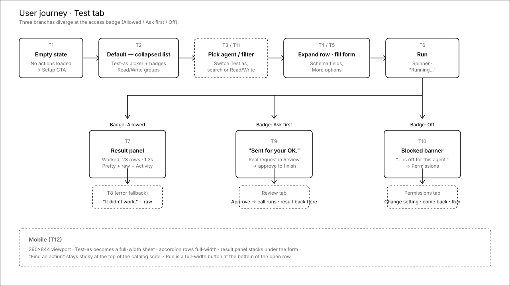
T1No actions yet
First-paint state when the catalog hasn't loaded (e.g. connection unhealthy or never synced). One clear nudge back to Setup, no fake list rows.
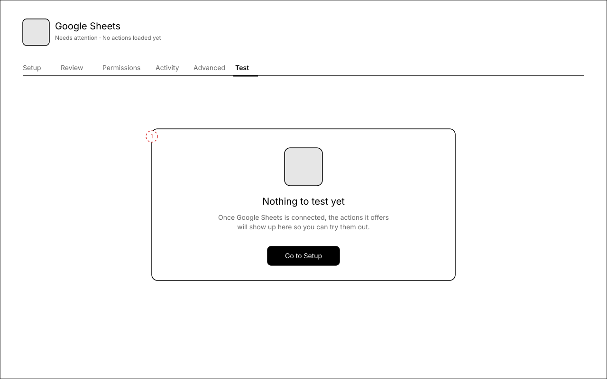
Annotations
- 1 — Single empty card, centred. Headline doubles as the explanation; the body line covers why the list is empty.
T2Default view — collapsed catalog
First impression for most users. Test-as picker on the left, quiet explainer on the right, then the catalog. Each row is one action with a per-agent badge so you read the outcome before you click.
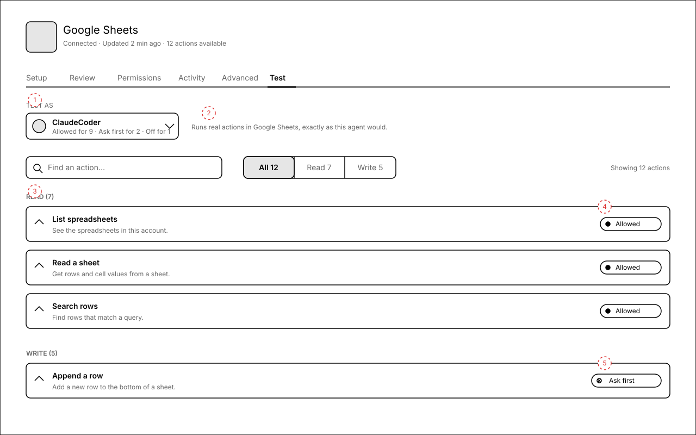
Annotations
- 1 — Test as ClaudeCoder. Defaults to the first agent who has access via this app's profile. Below the name we summarise their effective access ("Allowed for 9 · Ask first for 2 · Off for 1") so the picker doubles as a permissions overview.
- 2 — Filter bar: search input + segmented All / Read / Write. Counts update with the search box.
- 3 — Group headers. We propose Read / Write as the grouping (see Open questions for the rationale).
- 4 — Per-row access badge — Allowed, Ask first, or Off. Computed for the chosen agent from current settings. Recognition over recall: the badge tells you the outcome before the form is even visible.
- 5 — Write actions get the same row shape; the badge does the differentiation. No colour, no warnings on the row.
T3Test-as picker open
Click the Test-as control and you get a panel of agents you can assign tasks to, with the agent's effective access summary on each row. A side legend explains the badge vocabulary so first-time users learn it without leaving the screen.
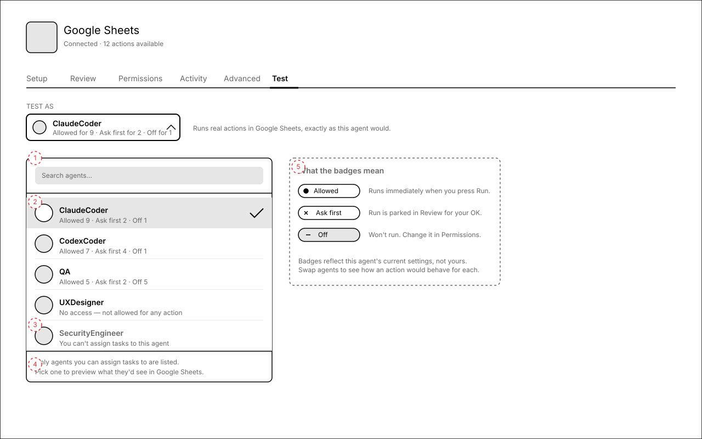
Annotations
- 1 — Search-by-name input. Optional but cheap — companies will have dozens of agents.
- 2 — Each row carries the agent's per-app access summary so you can pick "the agent with the most generous access" or "the most locked-down agent" without leaving the picker.
- 3 — Agents with no access at all still appear, with a quiet line. They're useful to test the Off path against.
- 4 — Footer copy: "Only agents you can assign tasks to are listed." Quietly explains the missing names.
- 5 — Side legend: badge vocabulary, never shown elsewhere. First-time educational content; can be a popover in the build.
T11Filter + search — large catalog
48-action catalog with a "row" search and the Write filter active. Match count is in the right rail; the Off rows still appear so you can see what's off, not pretend it doesn't exist.
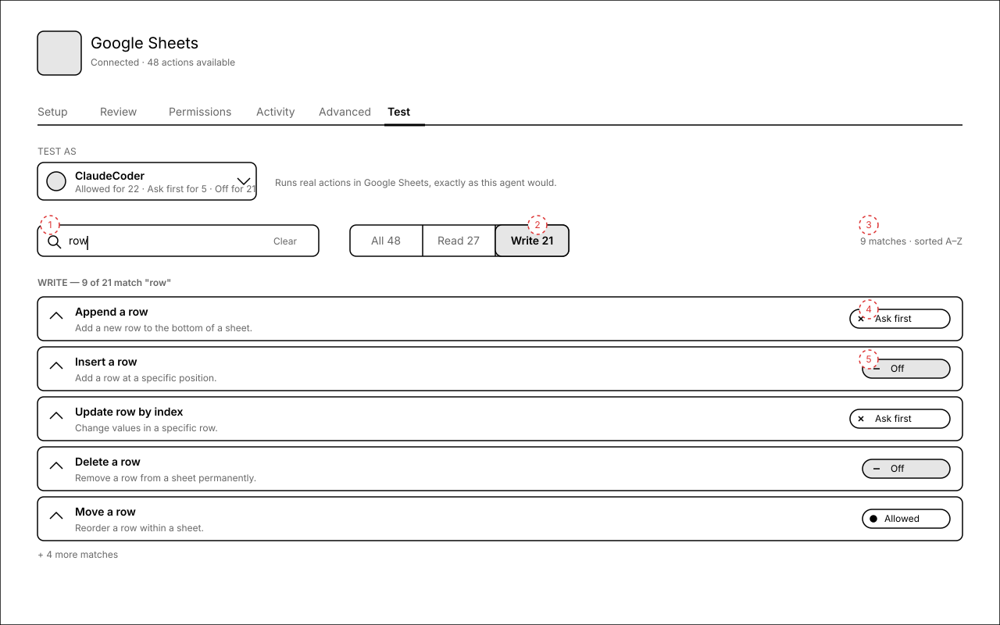
Annotations
- 1 — Active search query renders as the input value, with a Clear affordance on the right.
- 2 — Write filter selected; counts update in-place ("Write 21" stays the total; "9 matches" is contextual).
- 3 — Right-aligned status line keeps the count out of the way but visible.
- 4 — Off rows stay in the list, just with the Off badge. Hiding them would mislead users about the catalog shape.
- 5 — Truncation: "+ 4 more matches" instead of forcing a full table render. The scroll continues below.
T4Row expanded — schema form
Expand a row to reveal the schema-driven form. Required fields are visible; "More options" hides the long tail. Result panel on the right is a soft placeholder until the first Run.
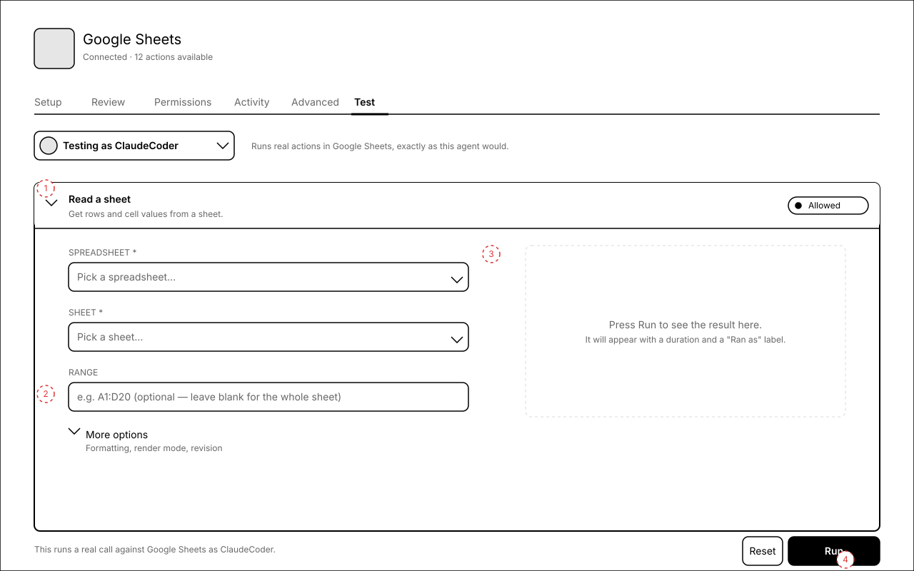
Annotations
- 1 — Expanded row header stays at the top with the badge — anchor for the user.
- 2 — More options closed by default; collapses long, advanced or optional fields. Progressive disclosure.
- 3 — Empty result panel uses dashed border + 2-line guidance — Aesthetic-Usability + Norman's signifier: the dashed edge says "this becomes content after Run".
- 4 — Big black Run on the right; Reset secondary. Plain-language gut-check line on the left: "This runs a real call against Google Sheets as ClaudeCoder."
T5More options open
Power users open More options to tweak render mode, formatting, etc. The optional fields render in a tighter, two-column layout because they're for power use.
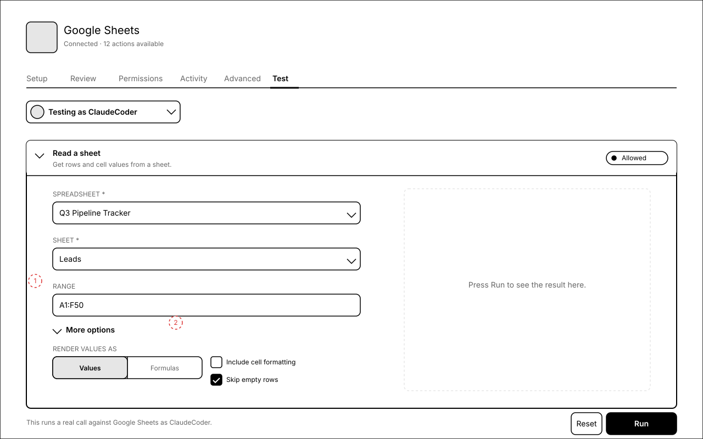
Annotations
- 1 — Disclosure now points down. Optional fields use a denser two-column layout.
- 2 — Defaults are reflected in toggles/segmented controls; the user is editing a default-populated form, not building from scratch (Defaults bias).
T6Running
Optimistic feedback under the Doherty threshold. The form disables (read-only, not vanished) so you can still see what you sent, with Cancel as the escape hatch.
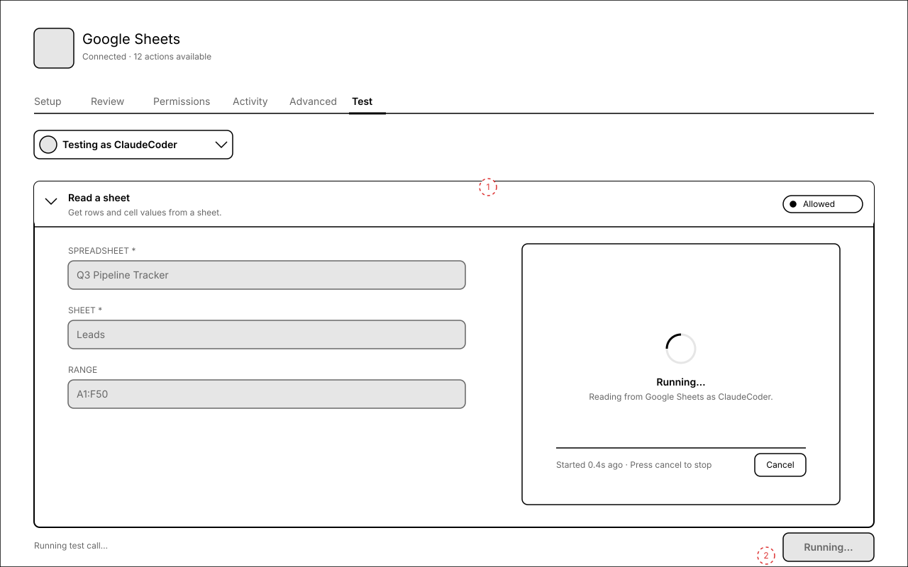
Annotations
- 1 — Result panel turns into a spinner card with a literal one-liner: "Reading from Google Sheets as ClaudeCoder." Provenance is part of feedback, not metadata.
- 2 — Run button switches to "Running…" + disabled. Cancel button inside the spinner panel; this is the only place to stop.
T7Result — Allowed
Outcome-first headline ("Worked. 28 rows came back."), provenance ("Ran as ClaudeCoder · 1.2s"), pretty preview, raw response on disclosure.
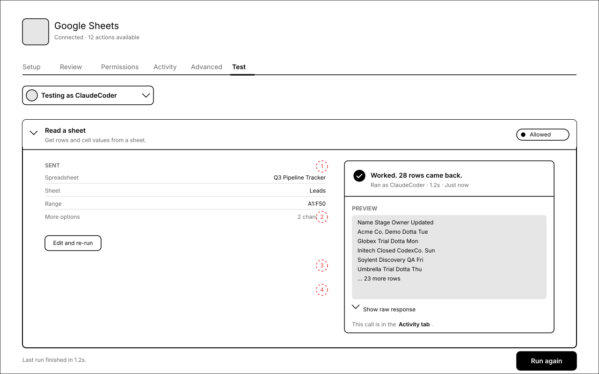
Annotations
- 1 — Plain-language headline + provenance: who ran it, how long it took, when.
- 2 — Pretty preview tries the tabular path first for sheet-shaped data, falls back to JSON for other shapes.
- 3 — Show raw response disclosure — collapsed by default; expands to a monospace block with the full MCP
CallToolResult. - 4 — Inline pointer to the Activity tab. The call is already recorded there; this surfaces it without ceremony.
T8Result — Error
App-side error rendered in plain language ("It didn't work."), with the raw payload still available on disclosure and a "what to try" hint to keep momentum.
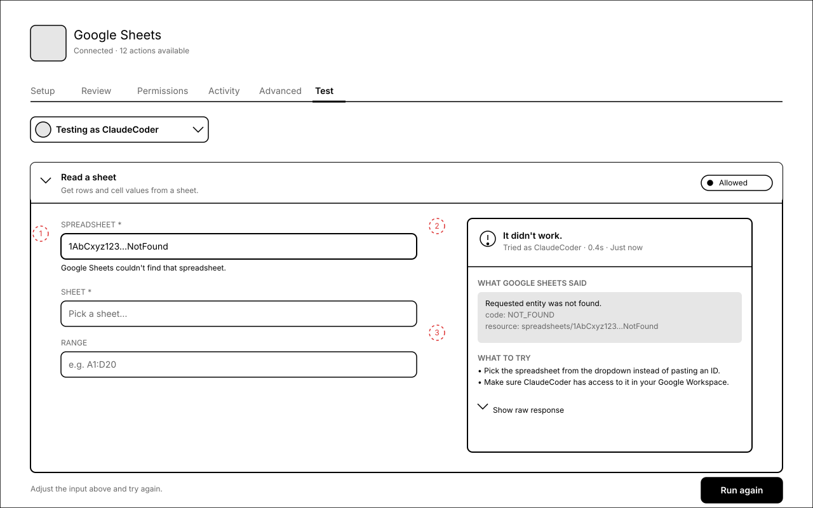
Annotations
- 1 — Inline field error on the offending input. The form stays editable; user fixes and re-runs.
- 2 — Result panel headline is the verdict ("It didn't work"), not the error code.
- 3 — "What to try" — two concrete actions, not a generic "check your input".
T9Result — Ask first (sent to Review)
Run creates a real action request. The result panel becomes a status card with two buttons: Open Review tab (primary) and Cancel this request (secondary).
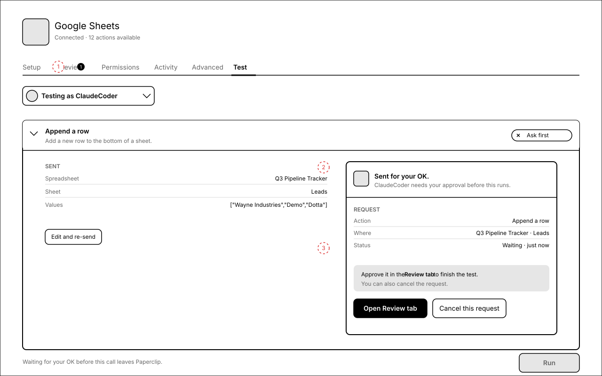
Annotations
- 1 — Tab strip picks up a badge on Review. The waiting request is visible from anywhere in the app detail.
- 2 — Status card frames what was sent, who needs to approve, and what happens next. Headline is the verdict, the rest is provenance.
- 3 — Two clear next steps. Open Review tab deep-links straight to this request; Cancel this request kills it with no consequence.
T10Result — Off (blocked + link to Permissions)
Pressing Run on an Off action does nothing. Instead, the expanded row leads with a big banner: "Delete a row is off for ClaudeCoder. It won't run here, and it won't run from a task either." With a button that deep-links to Permissions.
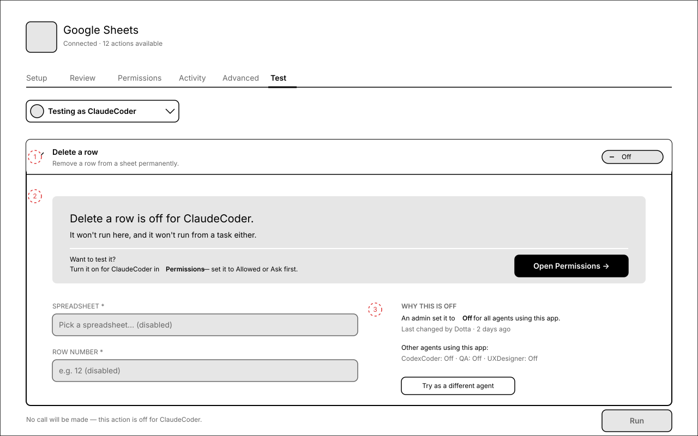
Annotations
- 1 — Off banner replaces the Run flow entirely. Form is greyed below as a preview — visible, not interactive.
- 2 — Greyed form so the user knows what the action would have asked for if it weren't off (helps decide whether to turn it on).
- 3 — Side panel: Why this is off + audit hint ("Last changed by Dotta · 2 days ago"), plus Try as a different agent as a softer escape hatch than re-routing to Permissions.
T12Mobile — 390×844
Test-as becomes a full-width sheet; the Read/Write segmented control stays under the search; rows are full-width with the badge bottom-right; results stack under the form when a row is expanded.
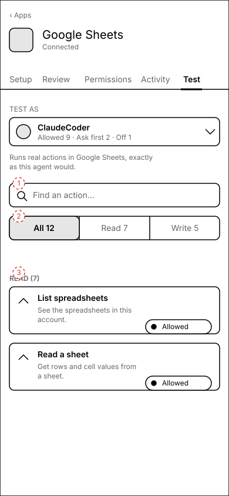
Annotations
- 1 — Search input pinned under the Test-as control; doesn't scroll away.
- 2 — Segmented filter keeps three-up at this width with 12 actions in the catalog. At larger counts the labels collapse to "All / Read / Write".
- 3 — Row height grows to fit the wrapped description; the badge anchors to the bottom-right of the row.
Microcopy
Single source of truth for the build (PAP-11350). Every string here is the prosumer version — no tool, schema, MCP, quarantine, run-as, runId.
Tab label
| Location | String |
|---|---|
| Sidebar / tab | Test |
Header
| Element | String |
|---|---|
| Test-as label | TEST AS (uppercase 12px, muted) |
| Test-as summary (under name) | Allowed for {n} · Ask first for {n} · Off for {n} — singular: "Allowed for 1 action · …" |
| Header explainer | Runs real actions in {App}, exactly as this agent would. |
| Compact label (after first interaction) | Testing as {Agent} |
Picker
| Element | String |
|---|---|
| Search placeholder | Search agents… |
| Row sub-line | Allowed {n} · Ask first {n} · Off {n} |
| Empty access row | No access — not allowed for any action |
| Disabled row (no assign rights) | You can't assign tasks to this agent |
| Footer | Only agents you can assign tasks to are listed. / Pick one to preview what they'd see in {App}. |
Filter bar
| Element | String |
|---|---|
| Search placeholder | Find an action… |
| Segmented control | All {n} · Read {n} · Write {n} |
| Search context (right rail) | {matchCount} matches · sorted A–Z |
| No matches | No actions match "{q}". Clear the search to see them all. |
Action row (collapsed)
| Element | String |
|---|---|
| Title | Humanized action name (use existing humanizeConnectionDisplayName sibling helper for tool names). |
| Sub-line | First sentence of the action's catalog description; trim trailing periods. |
| Badges | Allowed (filled dot) · Ask first (× icon) · Off (— icon, grey fill) |
Expanded row · form
| Element | String |
|---|---|
| Required field label | Schema title uppercased, with trailing * |
| Field placeholder | Schema description, prefixed "e.g. " for free-form strings, "Pick a …" for enums. |
| Disclosure | More options · sub-line Formatting, render mode, revision (derive from schema field titles, comma-joined, max 6 listed) |
| Gut-check footer (Allowed) | This runs a real call against {App} as {Agent}. |
| Gut-check footer (Ask first) | Waiting for your OK before this call leaves Paperclip. |
| Gut-check footer (Off) | No call will be made — this action is off for {Agent}. |
| Run button (allowed/idle) | Run |
| Run button (allowed/disabled) | Running… |
| Reset button | Reset |
Running
| Element | String |
|---|---|
| Headline | Running… |
| Sub-line | {Verb}ing from/to {App} as {Agent}. (e.g. Reading from Google Sheets as ClaudeCoder. / Writing to Google Sheets as ClaudeCoder. / Calling {App} as {Agent}. as the generic fallback) |
| Duration line | Started {n}s ago · Press cancel to stop |
| Cancel button | Cancel |
Result · Allowed
| Element | String |
|---|---|
| Headline (success) | Worked. {summary}. Examples: Worked. 28 rows came back. / Worked. Row added. / Worked. No data to show. (when result is empty). |
| Provenance | Ran as {Agent} · {n}s · {relativeTime} (e.g. Ran as ClaudeCoder · 1.2s · Just now) |
| Section labels | PREVIEW (pretty render) · SHOW RAW RESPONSE (disclosure) |
| Activity link | This call is in the Activity tab. |
| Footer line | Last run finished in {n}s. |
| Re-run button | Run again |
Result · Error
| Element | String |
|---|---|
| Headline | It didn't work. |
| Provenance | Tried as {Agent} · {n}s · {relativeTime} |
| Section label | WHAT {APP} SAID (caps; e.g. WHAT GOOGLE SHEETS SAID) |
| What-to-try heading | WHAT TO TRY |
| Field-level error (under input) | Plain sentence; never the raw code (e.g. "Google Sheets couldn't find that spreadsheet.") |
| Footer line | Adjust the input above and try again. |
| Re-run button | Run again |
Result · Ask first
| Element | String |
|---|---|
| Headline | Sent for your OK. |
| Sub-line | {Agent} needs your approval before this runs. |
| Action / Where / Status rows | Action, Where, Status — keyed key/value list, right-aligned values. |
| Status row value | Waiting · {relativeTime} / Approved · running / Cancelled / Denied |
| Help banner | Approve it in the Review tab to finish the test. You can also cancel the request. |
| Primary CTA | Open Review tab |
| Secondary CTA | Cancel this request |
| Tab-strip badge on Review | Numeric count of pending test-originated approvals; same component as Review's existing inbox count. |
Result · Off
| Element | String |
|---|---|
| Banner headline | {Action title} is off for {Agent}. |
| Banner sub-line | It won't run here, and it won't run from a task either. |
| Banner explainer | Want to test it? Turn it on for {Agent} in Permissions — set it to Allowed or Ask first. |
| Primary CTA | Open Permissions → |
| Side panel label | WHY THIS IS OFF |
| Side panel body (action-level) | An admin set it to Off for all agents using this app. |
| Side panel body (agent-level) | {Agent}'s access profile sets this action to Off. |
| Side panel audit hint | Last changed by {Actor} · {relativeTime} |
| Side panel cross-link | Other agents using this app: {Agent}: {Setting} · {Agent}: {Setting} |
| Side CTA | Try as a different agent (re-opens the Test-as picker) |
| Footer line | No call will be made — this action is off for {Agent}. |
Empty state
| Element | String |
|---|---|
| Headline | Nothing to test yet |
| Body | Once {App} is connected, the actions it offers will show up here so you can try them out. |
| CTA | Go to Setup |
Vocabulary — never use
| Don't say | Say instead |
|---|---|
| tool / tool call / tool name | action / call / action name |
| quarantine / quarantined | off / turned off |
| require approval / approval gate | ask first / send for your OK |
| impersonate / run-as / sudo | test as / testing as |
| schema / JSON schema / parameters | fields / what you give it |
| MCP / server / endpoint | (don't surface — the app's name is enough) |
| runId / runRef / executionId | (omit — replace with "Ran as {Agent} · {duration}") |
| denied / 403 / unauthorized | off · won't run · ask first |
Open questions
- Grouping — We propose Read / Write over first-word verb. Read/Write maps to risk (writes mutate state), mirrors how Permissions is decided, and stays at two buckets even for 50+ actions. First-word verb (List/Read/Search/Append/Update/Delete) balloons into 6+ thin groups for small catalogs. OK with Read / Write as the v1 grouping?
- Pretty preview heuristic — for v1 the pretty pane tries (1) table render if the result looks row-shaped, (2) JSON with key collapse otherwise, (3) plain text for string results. Ship that and iterate? Or always JSON?
- "Try as a different agent" affordance on Off — extra surface, but stops the user from having to scroll back to the header. Keep, or rely on the header picker?
- Run-button copy on Ask first — currently Run (and the call is parked). Considered Send for OK but it splits the muscle memory between Allowed and Ask-first. Keep one verb?
- Result panel on mobile — stacked under the form so the user doesn't lose the form on a small screen. Or replace the form with the result, with a "Back to form" link?